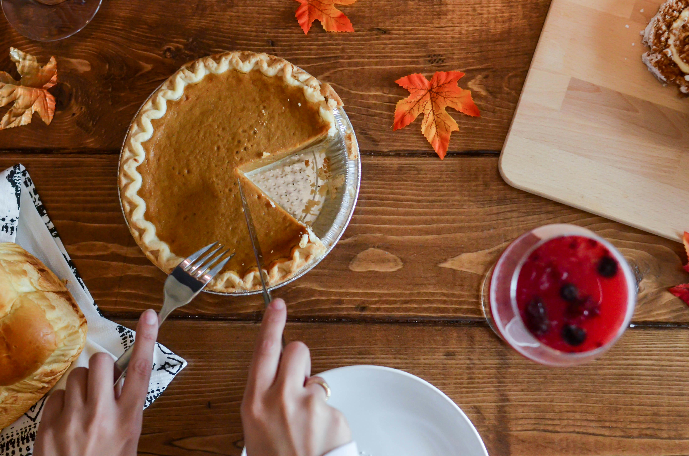

Perfect Pumpkin Pie

Pumpkin Pie Recipe Overview
Whenever the holidays come around, one of the things on everyone's mind is a delicious pumpkin pie!
Whether it's fall or winter, this easy to follow pumpkin pie recipe will settle the craving for a perfect holiday treat!
Ingredients
- 1 15 oz can of pumpkin puree
- 1 14 oz can of Eagle Brand Sweetened Condensed Milk
- 2 large eggs
- 1 teaspoon of ground cinnamon
- 1/2 teaspoon of ground ginger
- 1/2 teaspoon of ground nutmeg
- 1/2 teaspoon of salt
- 1 9 inch unbaked pie crust
Steps
- Gather all the needed ingredients and preheat the oven to 425 degrees Fahrenheit.
- Whisk the pumpkin puree, condensed milk, eggs, cinnamon, ginger, nutmeg, and salt together in a medium sized bowl until smooth.
- Pour the mixture into the crust. Bake in the oven for 15 minutes.
- Reduce the oven temperature to 350 degrees Fahrenheit and continue baking for 35 to 40 minutes, until a knife inserted 1 inch from the crust comes out clean. Let the pie cool before serving.